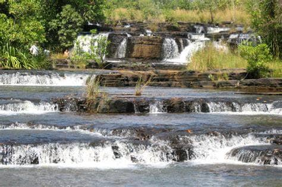

LES CASCADES DE BANFORA

Situées à environ 12 km au Nord-Ouest de Banfora, elles tiennent leur nom de la commune de Karfiguéla. Elles constituent l'un des sites touristiques les plus importants au Burkina Faso. La région des Cascades tire son nom de ces chutes d'eau.
Banfora, ville frontalière de la Côte d’Ivoire dispose d’un climat doux et d’une végétation comparable à celle des pays côtiers permettant de le nommer sans en abuser la Côte d’Azur du Burkina. Mais au sommet d’une colline, se laissent admirer les fameuses cascades qui font la fierté de tout Banfora.
Les cascades de Karfiguéla ou cascades de Banfora sont une série de cascades le long du fleuve Comoé au Sud-Ouest du Burkina Faso. Elles sont situées à environ 12 km au Nord-Ouest de Banfora et constituent l’un des sites touristiques les plus importants au Burkina Faso. La région des Cascades tire son nom de ces cascades. Dans la chaleur du mois d'Avril, entendre le son de l’eau qui coule au loin est en soi une délivrance. Une dizaine de baignoires naturelles et de bains à remous remplis d’une eau limpide et glacée vous y attendent.
La visite des lieux est payante : 1000F CFA pour les étrangers et 500F CFA pour les visiteurs nationaux. La seule stricte interdiction est de passer la nuit sur le site.